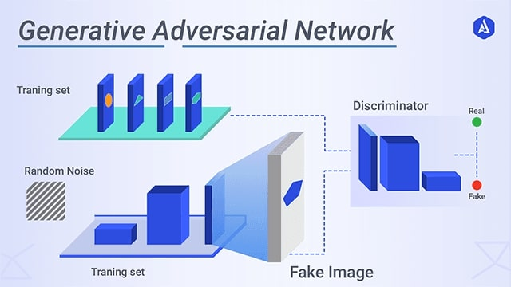

Generative Adversarial Network
Generative Adversarial Networks (GANs)
What is a GAN?
A Generative Adversarial Network (GAN) is a machine learning setup with two neural networks: a Generator (makes fakes) and a Discriminator (spots fakes). They compete, and both get better over time.
A Generative Adversarial Network (GAN) is a machine learning setup with two neural networks: a Generator (makes fakes) and a Discriminator (spots fakes). They compete, and both get better over time.
GAN Architecture Explained
| Component | Role | Analogy |
|---|---|---|
| Generator (G) | Creates fake data (like fake images) from random noise. | Forger (makes counterfeits) |
| Discriminator (D) | Tries to tell if data is real (from the dataset) or fake (from the generator). | Detective (spots fakes) |
How it works:
- Generator makes fakes from random noise.
- Discriminator sees both real and fake data, and tries to guess which is which.
- Both networks learn and improve by competing with each other.
The Math Behind GANs (Simple Version)
The GAN Game:
$$ \min_G \max_D V(D, G) = \mathbb{E}_{x \sim p_{data}(x)} [\log D(x)] + \mathbb{E}_{z \sim p_z(z)} [\log(1 - D(G(z)))] $$
$$ \min_G \max_D V(D, G) = \mathbb{E}_{x \sim p_{data}(x)} [\log D(x)] + \mathbb{E}_{z \sim p_z(z)} [\log(1 - D(G(z)))] $$
- $x$: Real data from the dataset
- $z$: Random noise input
- $G(z)$: Fake data made by the generator
- $D(x)$: Probability that $x$ is real
- $D(G(z))$: Probability that the fake is real
What does this mean?
- The discriminator tries to say "real" for real data and "fake" for fakes.
- The generator tries to make fakes so good that the discriminator thinks they're real.
Why Does This Work?
- At first, the generator makes poor fakes, and the discriminator easily spots them.
- Over time, the generator learns to make better fakes, and the discriminator gets pickier.
- Eventually, the generator's fakes are so good that the discriminator can't tell real from fake (it guesses 50/50).
Fun Fact: When GANs are trained well, even humans can have trouble telling the fakes from the real data!
Mathematical Proof: Why GANs Work
1. The Optimal Discriminator
For a fixed generator $G$, the best possible discriminator $D^*$ is:
$$ D^*(x) = \frac{p_{data}(x)}{p_{data}(x) + p_g(x)} $$
where $p_{data}(x)$ is the real data distribution and $p_g(x)$ is the generator's distribution.
For a fixed generator $G$, the best possible discriminator $D^*$ is:
$$ D^*(x) = \frac{p_{data}(x)}{p_{data}(x) + p_g(x)} $$
where $p_{data}(x)$ is the real data distribution and $p_g(x)$ is the generator's distribution.
2. The Value Function at the Optimum
Plugging $D^*(x)$ back into the GAN objective, we get:
$$ V(G, D^*) = \mathbb{E}_{x \sim p_{data}} \left[ \log \frac{p_{data}(x)}{p_{data}(x) + p_g(x)} \right] + \mathbb{E}_{x \sim p_g} \left[ \log \frac{p_g(x)}{p_{data}(x) + p_g(x)} \right] $$
This can be shown to be equal to:
$$ -\log(4) + 2 \cdot \text{JSD}(p_{data} \| p_g) $$ where JSD is the Jensen-Shannon divergence, a way of measuring how different two distributions are.
Plugging $D^*(x)$ back into the GAN objective, we get:
$$ V(G, D^*) = \mathbb{E}_{x \sim p_{data}} \left[ \log \frac{p_{data}(x)}{p_{data}(x) + p_g(x)} \right] + \mathbb{E}_{x \sim p_g} \left[ \log \frac{p_g(x)}{p_{data}(x) + p_g(x)} \right] $$
This can be shown to be equal to:
$$ -\log(4) + 2 \cdot \text{JSD}(p_{data} \| p_g) $$ where JSD is the Jensen-Shannon divergence, a way of measuring how different two distributions are.
Conclusion:
- The generator gets better by making $p_g$ (the fake data) as close as possible to $p_{data}$ (the real data).
- When $p_g = p_{data}$, the discriminator can't tell the difference and always outputs 0.5.
- This is what it means for the GAN to "work" – the generator has learned to make perfect fakes!
References
-
Goodfellow, I., Pouget-Abadie, J., Mirza, M., Xu, B., Warde-Farley, D., Ozair, S., Courville, A., & Bengio, Y. (2014). Generative Adversarial Nets. NeurIPS.
- Ian Goodfellow's NIPS 2016 Tutorial: arXiv:1701.00160
- Radford, A., Metz, L., & Chintala, S. (2015). Unsupervised Representation Learning with Deep Convolutional GANs. arXiv:1511.06434.